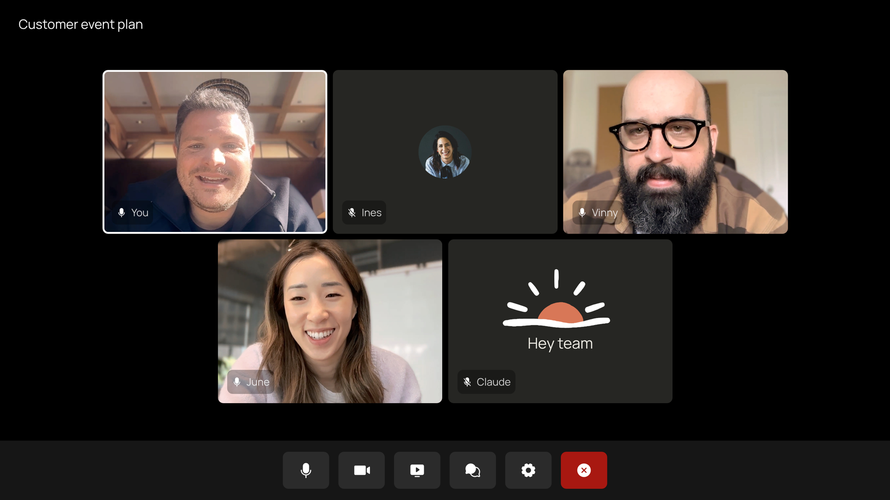
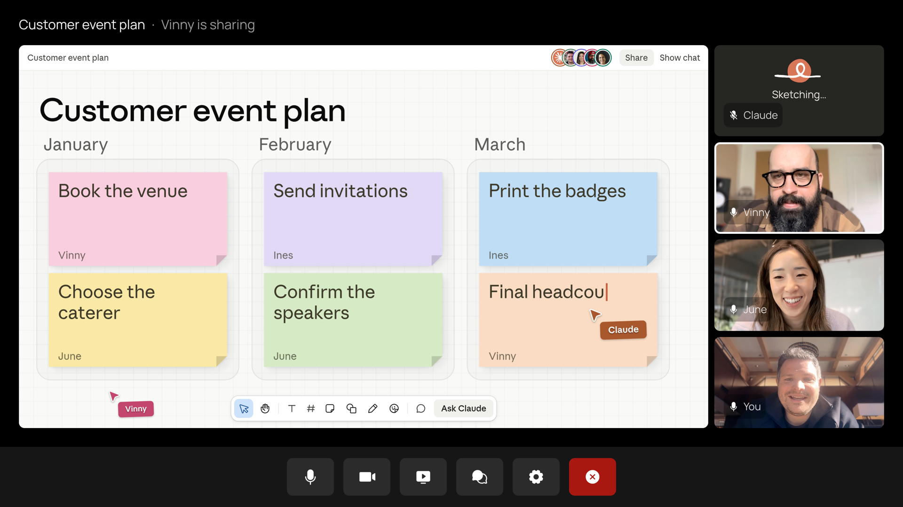
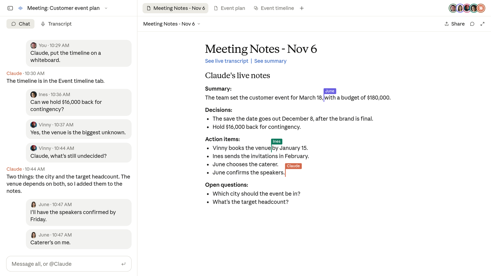

화상 회의에 Claude를 추가하고, 대화하는 동안 작업을 시작하세요
이제 Claude가 눈에 보이는 참석자로 화상 회의에 참여해 대화를 따라가고, 회의 중에 작업을 시작할 수 있습니다. Claude Meetings가 지금 베타로 제공됩니다.
팀원들은 회의 중에 말로 또는 채팅으로 Claude에게 질문할 수 있습니다. 기본적으로 Claude는 글로 답하며, 여러분의 허락을 받아 연결된 도구(connected tools)를 사용할 수 있습니다.

Claude는 또한 여러분과 실시간으로 함께 문서, 화이트보드(whiteboards) 같은 아티팩트(artifact)를 만들고, 초대받은 팀원들은 그것을 다듬을 수 있습니다. 메모와 할 일(action items)은 Claude가 작성하므로, 통화 참석자 누구도 따로 기록할 필요가 없습니다.
Claude Meetings는 Team 및 Enterprise 플랜에서 베타로 순차 출시되기 시작합니다. 다른 화상 회의 플랫폼 지원도 곧 추가될 예정입니다.
팀이 고객 행사를 기획하고 있고, Claude가 통화에 참여해 있다고 해 봅시다. 여러분이 “Claude, 이 계획으로 문서를 하나 시작해 줘.”라고 말합니다. Claude는 지금까지 팀이 한 이야기를 정리해 적고, 초대받은 팀원들은 여러분이 계속 이야기하는 동안 계획을 편집할 수 있습니다.
예산 이야기를 시작하자, 누군가 Claude에게 작년 행사 비용이 얼마였는지 묻습니다. Claude는 그 내용을 찾아봐도 되는지 그 사람에게 승인을 요청하고, 결과를 회의 채팅에 올린 뒤 현재 계획과 비교합니다. 일정 이야기를 시작하자 누군가 Claude에게 일정을 화이트보드에 올려 달라고 하고, 팀은 문서와 나란히 일정을 다듬습니다.

회의가 끝나기 전에 누군가 Claude에게 팀과 요약(recap)을 공유해 달라고 요청합니다. 통화가 끝나면 메모, 할 일, 계획, 화이트보드가 모두 claude.ai의 해당 회의 페이지에 정리되어 있습니다.

나중에 여러분이 참석했던 회의로 돌아가 Claude에게 그 회의에 대해 물어볼 수도 있고, claude.ai의 캘린더에서 다음 회의에 Claude를 추가할 수도 있습니다.
저희는 Gong, Attention, Granola, Fireflies.ai, Otter 같은 파트너와 협력하고 있으며, 곧 회의 녹취록(transcript)을 팀이 이미 쓰고 있는 도구로 보낼 수 있게 됩니다.
Claude는 claude.ai에 회의마다 별도의 페이지를 만들어 메모, 녹취록, 그리고 Claude가 만든 모든 것을 담습니다. 초대받은 같은 조직 구성원은 이 페이지를 보고 Claude가 만든 결과물을 편집할 수 있으며, 페이지에서 조직 내 다른 사람에게 공유할 수도 있습니다.
기본적으로 Claude는 조직 외부 사람이 초대된 통화에는 참여하지 않고, 통화 도중 외부 사람이 들어오면 나가도록 설정되어 있습니다. 관리자는 외부 게스트가 있는 통화에도 Claude가 참여하도록 허용할 수 있습니다. 그런 통화에서 Claude는 통화 채팅에 안내문을 올리지만 채팅에서 답하지는 않으며, 게스트가 한 말은 메모와 녹취록에 포함됩니다.
Claude는 각 사람의 연결된 도구를 그 사람의 허락을 받아 사용합니다. 처음 한 번 묻고, 허락하면 이후에도 계속 적용됩니다. 다만 현재는 누군가 말로 요청하면, Claude가 매번 누가 말하고 있는지 확인을 요청합니다. 통화 채팅에 올라간 답변은 통화 참석자 모두가 볼 수 있습니다.
Claude는 참여하면 참석자로 표시되고, 통화 채팅에 안내문을 올립니다. Claude는 오디오가 아니라 녹취록, 요약, 화면 설명을 저장합니다.
Claude를 추가하거나 자동 참여(auto-join)를 켜기 전에, 통화 참석자 모두가 녹취되는 것에 동의하는지 확인하세요.
Claude는 누군가 Claude를 추가했거나 자동 참여를 켜 두었을 때 회의에 참여합니다. 현재는 Google Meet을 지원하며, 다른 플랫폼도 곧 지원될 예정입니다. Team 플랜에서는 회의에 Claude를 초대하는 기능이 기본으로 켜져 있고, 관리자가 끌 수 있습니다. Enterprise 플랜에서는 관리자가 조직 전체 또는 일부에 대해 이 기능을 켭니다. 베타 기간에는 일부 조직에서 사용할 수 없는데, 여기에는 제로 데이터 보존(ZDR), HIPAA 대응 구성, 고객 관리 암호화 키(CMEK)를 사용하는 조직이 포함됩니다.
베타 기간 동안 Claude의 메모와 녹취록은 Team 및 Enterprise 플랜에서 무료입니다. 통화 중 Claude의 답변도 무료인데, 답변이 연결된 도구를 사용하는 경우에는 플랜 사용량에 포함됩니다. 통화 중 Claude가 만드는 문서, 화이트보드 및 기타 아티팩트는 2027년 2월 10일까지 무료입니다.
설정 방법은 고객 센터(Help Center)에서 확인할 수 있습니다.